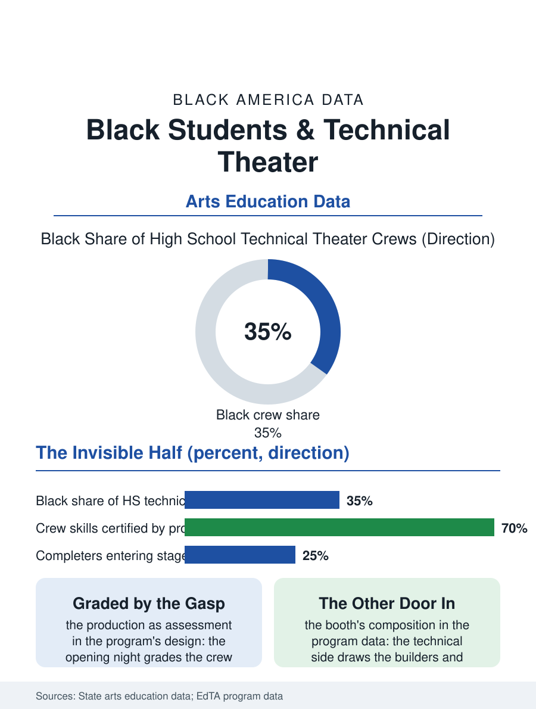

Black Education
The Ghost Light: Black Students and Technical Theater
The crew whose perfection is the audience's ignorance, holding the trades' fundamentals certified by opening night. The stagecraft file.

Technical theater is the stage's invisible half: the sets, the lights, the sound, and the stage management that make the performance possible, taught in the school program whose crew is the production's spine and whose students, in the urban programs, include the theater file's most diverse tier, the booth and the shop drawing the students the spotlight does not. This article reads the stagecraft file.
The Crew's Curriculum
The program's pedagogy is the production's calendar entire: the design's drafting, the shop's construction, the lighting plot's mathematics of angle and intensity, the sound's engineering, and the calling of the show, the stage manager's headset liturgy by which the performance's hundred cues land in their seconds, a curriculum whose assessment is the opening night in the culinary room's pattern, the audience grading without knowing the graders exist. The skills file is the trades' in costume: the carpentry of the construction shop, the electrical of the panel's, the rigging's physics, all practiced at the theater's tolerances and the show's deadline, so that the crew's completer holds a portfolio of the building trades' fundamentals certified by the productions' existence, a transcript the employers of the stage and film files read fluently. The safety file is the shop's own, the fly rail's counterweights and the catwalk's height taught with the trades' religion, in a program whose students are trusted with the building's most dangerous machinery on the strength of the discipline the file records. The strike, the production's dismantling in the hours after the final curtain, is the crew's graduation rite in every program's calendar, the set that took the term to raise coming down in a night under the work lights, the students carrying the flats to the storage they will raise next season's world from, in the cycle that teaches the theater's deepest fact in the muscles: everything built is struck, and the building is the joy anyway.
The Booth's Door
The crew's composition is the file's quiet datum: the technical side of the school stage draws the students whom the performance's spotlight economy sorts out, the builders and the engineers and the shy, in proportions that make the booth the theater program's most integrated room by temperament and, in the urban schools, by the demographics this file counts, with the girls' presence in the booth ahead of the trades' own in the pattern of the shops' files. The professional file above the program is the stagehand's union and the film crew's ladder of the employment files, whose junior tiers hire the school crew's veterans on the foreman's word as the other trades do, the call board of the regional theater being, for the completer who wants it, a hiring hall with better stories. The design file, the student's lighting plot chosen for the mainstage, is the program's portfolio summit as the director's chair is the performance side's, its rendering judged by the audience's gasp at the blackout's end, a review no rubric has ever improved.
What the Audience Never Sees
The stagecraft file closes on the crew's ethic, which the program teaches as the theater's first professional law: the work is invisible when it is perfect, the audience's ignorance of the crew being the crew's medal, a discipline of anonymous excellence that the students carry, in their teachers' accounts, into every later workplace as the program's unmeasured product. In the atlas's terms the booth is one more room where the community's young learn a trade's mastery under a master's eye at a standard the public grades nightly. The productions count rises each season in the schools that fund the shop. The file's last entry is the ghost light's single bulb on the emptied stage after the strike, set by the last crew member out, in the tradition whose meaning every stagehand learns and none can fully explain to the audience that never saw them, which is the crew's whole philosophy in one bulb: the stage is kept, even in the dark, by hands the house will never applaud, and the keeping is the applause's condition. The flats they carried out will be next season's walls, and some of the hands will be the teachers' by then.
More in Black Education
Black Educational Attainment: High School Parity, the College Gap
About 89 percent of Black adults hold a high school diploma and one in four holds a bachelor's degree or higher — the attainment ladder, the college completion gap, and the generational trend.
Historically Black Colleges and Universities: Enrollment and Degrees
More than 100 HBCUs enroll roughly 290,000 students and award about one in six Black bachelor's degrees — an outsized share from a small sector. The federal education data.
Black College Enrollment: 2.4 Million Students
About 2.4 million Black students are enrolled in American colleges — nearly two-thirds of them women. The NCES enrollment data by sector, level, and trend.
Source: State arts education data; Educational Theatre Association school program data.